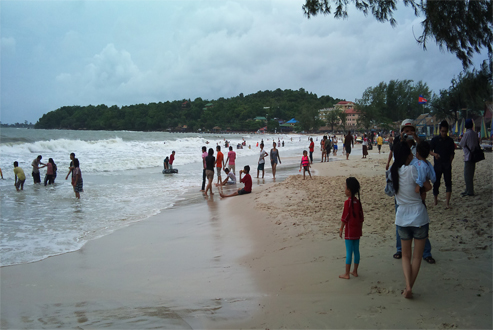
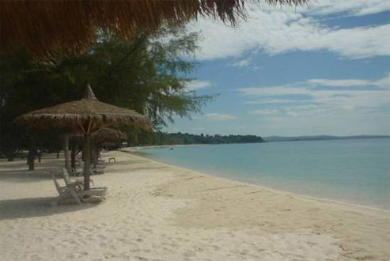
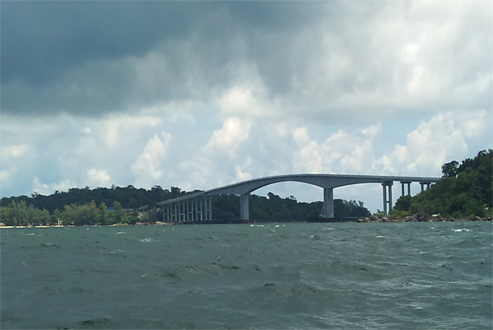
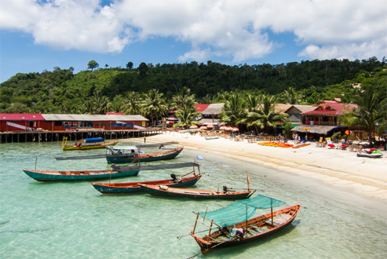

ក្រុងព្រះសីហនុ
តំបន់ទេសចរណ៏ឆ្នេរខេត្តព្រះសីហនុ ខេត្តព្រះសីហនុជាខេត្តមួយស្ថិតនៅភាគនីរតីនៃប្រទេសកម្ពុជាដែលសំបូរទៅដោយតំបន់ទេសចរណ៍សំរាប់ដើរកំសាន្ត ដែលមានកន្លែងទេសចរណ៏សំខាន់ៗចំនួន ៦កន្លែង ដែលនៅក្នុងនោះមានតំបន់ ឆ្នេ ៤ កន្លែង តំបន់កោះ ១ កន្លែង និង រមណីដ្ឋាន ធម្មជាតិ
និង វប្បធម៍ ដែលមានទីតាំងនៅក្នុង ខេត្តព្រះសីហនុមាន៖ តំបន់ទេសចរណ៏ឆ្នេរខេត្តព្រះសីហនុ ខេត្តព្រះសីហនុជាខេត្តមួយស្ថិតនៅភាគនីរតីនៃប្រទេសកម្ពុជាដែលសំបូរទៅដោយតំបន់ទេសចរណ៍សំរាប់ដើរកំសាន្ត ដែលមានកន្លែងទេសចរណ៏សំខាន់ៗចំនួន ៦កន្លែង ដែលនៅក្នុងនោះមានតំបន់ ឆ្នេ ៤
កន្លែង តំបន់កោះ ១ កន្លែង និង រមណីដ្ឋាន ធម្មជាតិ និង វប្បធម៍ ដែលមានទីតាំងនៅក្នុង ខេត្តព្រះសីហនុមាន៖
-> ឆ្នេរឯកអូរឈើទាល

ដែលមានទីតាំងស្ថិតនៅក្នុងសង្កាត់ ៣ ក្រុងព្រះសីហនុ។ តំបន់ឆ្នេរនេះមានលក្ខណះល្អជាងគេ ដែលមានឆ្នេរខ្សច់លាតសន្ធឹងវែង និងជម្រៅទឹករាក ទិដ្ឋភាពឆ្នេរអូរឈើទាល សភាពទឹកសមុទ្រមានសភាពស្ងប់ស្ងាត់ រីឯបរិយាកាសជុំវិញក៏មានលក្ខណះស្ងប់ស្ងាត់ដែល បើពិនិត្យមើលលក្ខណះ
ភូមិសាស្រ្តរបស់រមណីដ្ឋានឆ្នេរអូឈើទាល យើងឃើញមានសភាពប្លែកពីតំបន់ឆ្នេរផ្សេងៗទៀត ទាំងការដើរលេងកំសាន្តរបស់ភ្ញៀវទេសចរណ៏ជាតិ និងអន្តរជាតិ ទាំងការរៀបចំកន្លែងស្នាក់នៅសណ្ឋាគារគ្រិស្តាល រឺសណ្ឋាគារឆ្នេរសមុទ្រ។ ចំនែកឯចំណីអាហារមានការលក់ដូរគ្រប់មុខតាមតំរូវការភ្ញៀវ។ដែលមានទីតាំងស្ថិតនៅក្នុងសង្កាត់
៣ ក្រុងព្រះសីហនុ។ តំបន់ឆ្នេរនេះមានលក្ខណះល្អជាងគេ ដែលមានឆ្នេរខ្សច់លាតសន្ធឹងវែង និងជម្រៅទឹករាក ទិដ្ឋភាពឆ្នេរអូរឈើទាល សភាពទឹកសមុទ្រមានសភាពស្ងប់ស្ងាត់ រីឯបរិយាកាសជុំវិញក៏មានលក្ខណះស្ងប់ស្ងាត់ដែល បើពិនិត្យមើលលក្ខណះ ភូមិសាស្រ្តរបស់រមណីដ្ឋានឆ្នេរអូឈើទាល
យើងឃើញមានសភាពប្លែកពីតំបន់ឆ្នេរផ្សេងៗទៀត ទាំងការដើរលេងកំសាន្តរបស់ភ្ញៀវទេសចរណ៏ជាតិ និងអន្តរជាតិ ទាំងការរៀបចំកន្លែងស្នាក់នៅសណ្ឋាគារគ្រិស្តាល រឺសណ្ឋាគារឆ្នេរសមុទ្រ។ ចំនែកឯចំណីអាហារមានការលក់ដូរគ្រប់មុខតាមតំរូវការភ្ញៀវ។ដែលមានទីតាំងស្ថិតនៅក្នុងសង្កាត់ ៣
ក្រុងព្រះសីហនុ។ តំបន់ឆ្នេរនេះមានលក្ខណះល្អជាងគេ ដែលមានឆ្នេរខ្សច់លាតសន្ធឹងវែង និងជម្រៅទឹករាក ទិដ្ឋភាពឆ្នេរអូរឈើទាល សភាពទឹកសមុទ្រមានសភាពស្ងប់ស្ងាត់ រីឯបរិយាកាសជុំវិញក៏មានលក្ខណះស្ងប់ស្ងាត់ដែល បើពិនិត្យមើលលក្ខណះ ភូមិសាស្រ្តរបស់រមណីដ្ឋានឆ្នេរអូឈើទាល
យើងឃើញមានសភាពប្លែកពីតំបន់ឆ្នេរផ្សេងៗទៀត ទាំងការដើរលេងកំសាន្តរបស់ភ្ញៀវទេសចរណ៏ជាតិ និងអន្តរជាតិ ទាំងការរៀបចំកន្លែងស្នាក់នៅសណ្ឋាគារគ្រិស្តាល។
-> ឆ្នេរឯករាជ្យ

តំបន់ឆ្នេរនេះមានលក្ខណះឆ្នេរខ្សច់លាតសន្ធឹងវែង ប៉ុន្តែជំរៅទឹកជ្រៅមានលក្ខណះអូរអ៊រដោយភ្ញៀវទេសចរណ៏អន្តរជាតិ ពេញ និយមទៅងូតទឹកកំសាន្តនៅទីនោះ។ឆ្នេរសុខាមានការលក់គ្រឿងហូបចុក និងកន្លែងស្នាក់នៅច្រើន ដែលបង្ករលក្ខណះងាយស្រួលទៅដល់ភ្ញៀវដែលមកកំសាន្តនៅទីនោះ។រមណីដ្ឋានឆ្នេរសុខា
៖ តំបន់ឆ្នេរនេះមានលក្ខណះឆ្នេរខ្សច់លាតសន្ធឹងវែង ប៉ុន្តែជំរៅទឹកជ្រៅនិងខ្យល់អាសបរិសុទ្ធហើយលក្ខណះអូរអ៊រដោយភ្ញៀវទេសចរណ៏អន្តរជាតិ ពេញ និយមទៅងូតទឹកកំសាន្តនៅទីនោះ។ឆ្នេរសុខាមានការលក់គ្រឿងហូបចុក និងកន្លែងស្នាក់ជាស្តង់ដានៅច្រើន ហើយពីមួយឆ្នាំទៅមួយឆ្នាំមានភ្ញៀវទេសចរណ៏ជាតិ
និងភ្ញៀវទេសចរណ៏អន្តរជាតិមកកំសាន្តកាន់តែច្រើនព្រោះ ដែលបង្ករលក្ខណះងាយស្រួលទៅដល់ភ្ញៀវដែលមកកំសាន្តនៅទីនោះ។តំបន់ឆ្នេរនេះមានលក្ខណះឆ្នេរខ្សច់លាតសន្ធឹងវែង ប៉ុន្តែជំរៅទឹកជ្រៅមានលក្ខណះអូរអ៊រដោយភ្ញៀវទេសចរណ៏អន្តរជាតិ ពេញ និយមទៅងូតទឹកកំសាន្តនៅទីនោះ។ឆ្នេរសុខាមានការលក់គ្រឿងហូបចុក
និងកន្លែងស្នាក់នៅច្រើន ដែលបង្ករលក្ខណះងាយស្រួលទៅដល់ភ្ញៀវដែលមកកំសាន្តនៅទីនោះ។រមណីដ្ឋានឆ្នេរសុខា ៖ តំបន់ឆ្នេរនេះមានលក្ខណះឆ្នេរខ្សច់លាតសន្ធឹងវែង ប៉ុន្តែជំរៅទឹកជ្រៅនិងខ្យល់អាសបរិសុទ្ធហើយលក្ខណះអូរអ៊រដោយភ្ញៀវទេសចរណ៏អន្តរជាតិ ពេញ និយមទៅងូតទឹកកំសាន្តនៅទីនោះ។ឆ្នេរសុខាមានការលក់គ្រឿងហូបចុក
និងកន្លែងស្នាក់ជាស្តង់ដានៅច្រើន ហើយពីមួយឆ្នាំទៅមួយឆ្នាំមានភ្ញៀវទេសចរណ៏ជាតិ និងភ្ញៀវទេសចរណ៏អន្តរជាតិមកកំសាន្តកាន់តែច្រើនព្រោះ ដែលបង្ករលក្ខណះងាយស្រួលទៅដល់ភ្ញៀវដែលមកកំសាន្តនៅទីនោះ។ភ្ញៀវទេសចរណ៏អន្តរជាតិមកកំសាន្តកាន់តែច្រើនព្រោះ ដែលបង្ករលក្ខណះងាយស្រួលទៅដល់ភ្ញៀវដែលមកកំសាន្តនៅទីនោះ។
-> រមណីដ្ឋានក្បាលឆាយ

ដែលមានទីតាំងស្ថិតនៅស្រុកព្រៃនប់មានចំងាយ ៧គម ពីខេត្តព្រះសីហនុ បត់ឆ្វេង ៦គមទើបទៅដល់ទឹកធ្លាក់ ទិដ្ឋភាពនៅទឹកជ្រោះក្បាលឆាយ ទឹកជ្រោះក្បាលឆាយ ក្បាលឆាយ។ ទឹកជ្រោះក្បាលឆាយ មានប្រភពទឹកច្រើននៅតាមជួរភ្នំមាត់សមុទ្រ ប៉ុន្តែមកដល់ចំនុចខាងមុខក្បាលឆាយមានប្រភពទឹកហូរ
តែបីផ្លូវទេដែលមានកំពស់ ២ម ទៅ៤ម។ ចរន្តទឹកមកដល់ចំនុចក្បាលឆាយ គឺ ចរន្តតែមួយ ដែលមានទឹកហូរយ៉ាងខ្លាំង ហើយធ្លាក់ក្នុង ល្បាប់ទឹកមានកំពស់ ១៤ម។ ប្រវត្តិទឹកក្បាលឆាយត្រូវបានរកឃើញនៅឆ្នាំ 1960ដល់1963 ត្រូវបានរៀបចំជាកន្លែងប្រភពផ្តល់ទឹកស្អាត សំរាប់ប្រើប្រាស់ ក្នុង
ខេត្តព្រះសីហនុ។ ប៉ុន្តែការស្ថាបនានោះក៏ត្រូវបានខកខាន ដោយសារតែសង្រៀមកើតឡើង នោះក៏បានក្លាយជាតំបន់លាក់ខ្លួនរបស់ខ្មែរ ក្រហម។លុះមកដល់ឆ្នាំ1997តំបន់ក៏បានក្លាយជាតំបន់អភិវឌ្ឍន៏នៅក្នុងឆ្នាំ1998តំបន់ក្បាលឆាយត្រូវបានក្រុមហ៊ុនកុកអានដេញថ្លៃ រួចចាប់ ផ្តើមកសាងផ្លូវ
កែប្រែតំបន់នេះជារមណីដ្ឋានទេសចរណ៍ សំរាប់អ្នកទេសចរណ៍ក្នុងស្រុក និង ក្រៅប្រទេសមកកំសាន្តសប្បាយនៅទីនោះ។ប្រវត្តិទឹកក្បាលឆាយត្រូវបានរកឃើញនៅឆ្នាំ 1960ដល់1963 ត្រូវបានរៀបចំជាកន្លែងប្រភពផ្តល់ទឹកស្អាត សំរាប់ប្រើប្រាស់ ក្នុង ខេត្តព្រះសីហនុ។ ប៉ុន្តែការស្ថាបនានោះក៏ត្រូវបានខកខាន
ដោយសារតែសង្រៀមកើតឡើង នោះក៏បានក្លាយជាតំបន់លាក់ខ្លួនរបស់ខ្មែរ ក្រហម។លុះមកដល់ឆ្នាំ1997តំបន់ក៏បានក្លាយជាតំបន់អភិវឌ្ឍន៏នៅក្នុងឆ្នាំ1998តំបន់ក្បាលឆាយត្រូវបានក្រុមហ៊ុនកុកអានដេញថ្លៃ រួចចាប់ ផ្តើមកសាងផ្លូវ កែប្រែតំបន់នេះជារមណីដ្ឋានទេសចរណ៍ សំរាប់អ្នកទេសចរណ៍ក្នុងស្រុក
និង ក្រៅប្រទេសមកកំសាន្តសប្បាយនៅទីនោះ។
-> កោះពស់

កាលពីប៉ុន្មានឆ្នាំមុន កោះពស់គ្រាន់ តែជាកោះមួយ សម្រាប់អ្នកទេសចរ ផ្សងព្រេងទៅលេងកម្សាន្តជាមួយ ធម្មជាតិ ឬ ស្ទូចត្រី និង មុជមើលផ្កាថ្មប៉ុណ្ណោះ ប៉ុន្តែ សព្វថ្ងៃនេះកោះពស់បានក្លាយទៅជាទី គោលដៅទេសចរណ៍“មាស”មួយនៅតំបន់អាស៊ីអាគ្នេយ៍ហើយ
ដែល គេរំពឹងថាជាទេសចរណ៍ធម្មជាតិដ៏អស្ចារ្យនៅដែនសមុទ្រ ក្រុងព្រះសីហនុ និង នៅក្នុងតំបន់ ។ កោះមរកតជា ឈ្មោះរមណីយដ្ឋានមួយបង្កើតឡើងនៅលើកោះពស់ដែល ពោរពេញទៅដោយសោភណភាពបែបធម្មជាតិពិតៗ។ គេគ្រាន់តែធ្វើដំណើរឆ្លងស្ពានថ្មមួយសាងសង់ថ្មីភ្ជាប់
ទីក្រុងព្រះសីហនុទៅកោះតែ ៤ ឬ ៥ នាទីប៉ុណ្ណោះ ។កោះមរកតមានអគារស្នាក់នៅ ប្រណីតៗចំនួន ៣៦ ខ្នង សង់ តាមបណ្តោយឆ្នេរសមុទ្រ នៅលើផ្ទៃដីទំហំ ៤៥០ ទៅ ៥៧០ ម៉ែត្រការ៉េ។ ផ្ទះនីមួយៗមាន បន្ទប់ដេកពី ៣ ទៅ ៥ បន្ទប់ មានចំណតរថយន្តសម្រាប់រថយន្តពីរគ្រឿង
និង សង់តាមលំនាំបស្ចិមប្រទេសជឿនលឿន មានបន្ទប់ ទឹកបំពាក់ដោយសម្ភារៈទំនើបៗ មានរាន ហាល មានអាងហែលទឹកដែលមើលឃើញ សមុទ្រល្វឹងល្វើយ។ ថ្មីៗនេះមានគម្រោងអភិវឌ្ឍតាមបែបអន្តរជាតិដោយមានក្រុមជំនាញៗមកធ្វើការ ព្រមជាមួយគម្រោង
បង្កើតសហគមន៍ទេសចរណ៍ និង លំនៅស្ថានឯកជនយ៉ាងល្អប្រណីតដែលស្ថិតនៅលើកោះដ៏ស្រស់ត្រកាល មួយរបស់កម្ពុជាគឺកោះពស់ ដែលមានផ្ទៃក្រឡាប្រមាណជា ១.១៦៦.០៦១ ម៉ែត្រការ៉េ ។ នេះ ជាគម្រោងអភិវឌ្ឍសំខាន់បំផុតមួយរបៀបឧស្សាហកម្មទេសចរណ៍ថ្មី
តាមបណ្តោយឆ្នេរប្រទេសកម្ពុជា។កោះមរកតមានទីតាំងស្ថិតនៅក្នុងសមុទ្រ នៃក្រុងុព្រះសីហនុក្នុងចម្ងាយ ៩៥០ ម៉ែត្រ ត្រង់ ភាគខាងត្បូង ហើយកោះមរកតមានគោលបំណង នឹងអភិវឌ្ឍឱ្យមានស្តង់ដារអន្តរជាតិខ្ពស់បំផុត រួម ជាមួយស្ពានសម្រាប់ឆ្លងកាត់មន្ទីរពេទ្យ
លំនៅ ស្ថានឯកជន និង បង្កឱ្យមានភាពងាយស្រួល។
-> កោះរ៉ុង

ព័ត៌មានជាតិព័ត៌មានអន្តរជាតិព័ត៌មានកីឡាព័ត៌មានកំសាន្តព័ត៌មានសេដ្ឋកិច្ចជីវិតរស់នៅ និងសុខភាពព័ត៌មានបច្ចេកវិទ្យាទេសចរណ៍រមណីយដ្ឋានកំប្លែង រមណីដ្ឋានកោះរ៉ុងទាក់ទាញភ្ញៀវទេសចរទៅកម្សាន្តមួយថ្ងៃមិនក្រោម២០០នាក់ ថ្ងៃ ចន្ទ ទី ១២ ខែ មករា
ឆ្នាំ ២០១៥ ម៉ោង ១០:៤៥ ខេត្តព្រះសីហនុ ៖ កោះរ៉ុង បច្ចុប្បន្ននេះ កំពុងតែក្លាយជាគោលដៅទេសចរណ៍ដ៏ប្រពៃ ដែលមួយថ្ងៃៗទាក់ទាញភ្ញៀវទេសចរមកទស្សនាកម្សាន្តប្រមាណជា ២០០ នាក់នៅក្នុងមួយថ្ងៃ។ កោះនេះ មាននាវាចម្លងចេញចូលជាប្រចាំដោយ នៅក្នុងមួយថ្ងៃ
៣ ជើង។ បុគ្គលិកក្រុមហ៊ុននាវាចម្លងមួយរូប បានអះអាងថា នាវាចម្លងនេះគឺអាចដឹកភ្ញៀវ មួយជើង១០០ នាក់ ហើយមួយថ្ងៃគឺមានបីជើង។ នាវាចម្លងនេះ បានចេញចូលពីផែនៅឆ្នេអូឈើទាល ទៅកាន់កោះរ៉ុង និង កោះរ៉ុង សន្លឹម បី ជើង គឺ ម៉ោង ៨ និង៣០នាទីព្រឹក
ម៉ោង ១១ និង ម៉ោង ៣ រសៀល ហើយត្រឡប់មកវិញ គឺមានបីជើងដែរគឺ ម៉ោង១០ព្រឹក ម៉ោង ១ រសៀល និង ម៉ោង ៤ រសៀល។ សំបុត្រនាវាចម្លងនេះ សព្វថ្ងៃគឺ ទៅកោះរ៉ុង ត្រូវបានបញ្ចុះតម្លៃត្រឹម ១៥ ដុល្លារ តែទៅកោះរ៉ុងសន្លឹម គឺ ២០ដុល្លារ។ កោះរ៉ុងនេះ ត្រូវបានគេដឹងថា
គឺជាកោះមួយដែលធំជាងគេទីពីរនៅក្នុងប្រទេសកម្ពុជា ដែលមានផ្ទៃដីប្រមាណជា ៧៨គីឡូម៉ែត្រក្រឡា ដោយនៅក្នុងនោះគឺមានឆ្នេរប្រមាណជា ៤៣ គីឡូម៉ែត្រ។ កោះនេះវាមានចម្ងាយប្រមានជា ២៤ គីឡូម៉ែត្រ ពីឆ្នេរ ដែលគេអាចធ្វើដំណើរទៅបាន តាមទូក ប៉ុន្តែឥឡូវនេះគឺមាននាវាចម្លងទៅដល់ហើយ។
កោះនេះត្រូវបានគេដឹងថា គឺជាកោះមួយដែលត្រូវបានរាជរដ្ឋាភិបាលកម្ពុជា ប្រគល់ សិទ្ធិវិនិយោគឲ្យទៅក្រុមហ៊ុនរ៉ូយ៉ាល់ហ្គ្រោប វិនិយោគនៅក្នុងអំឡុងរយៈពេលរហូតដល់ ៩៩ ឆ្នាំ ប៉ុន្តែរហូតមកដល់ពេលនេះ នៅក្នុងក្រសែភ្នែករបស់អ្នកទេសចរបរទេស។